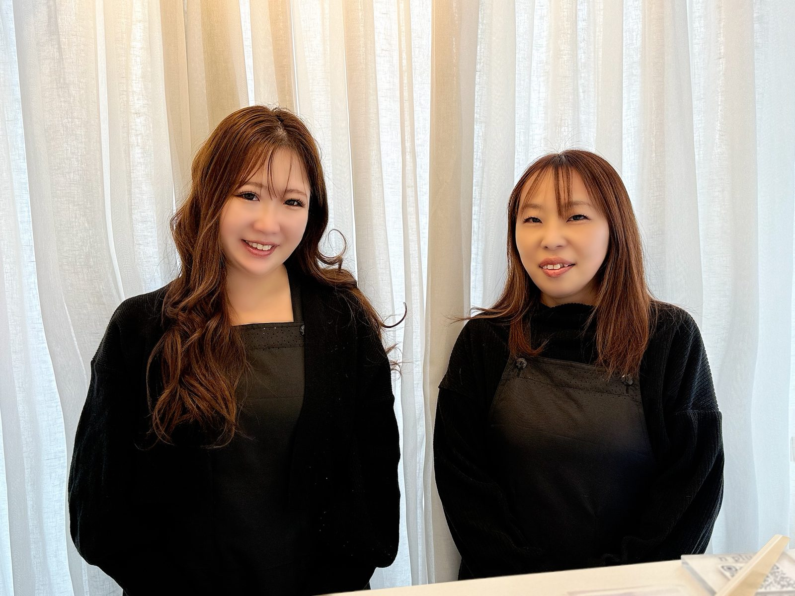
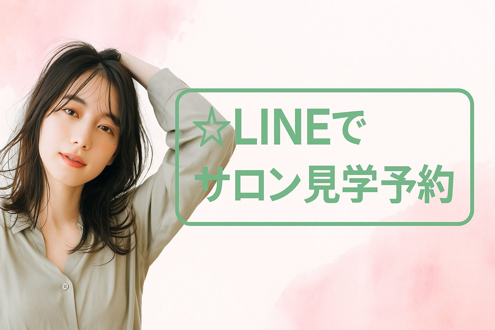
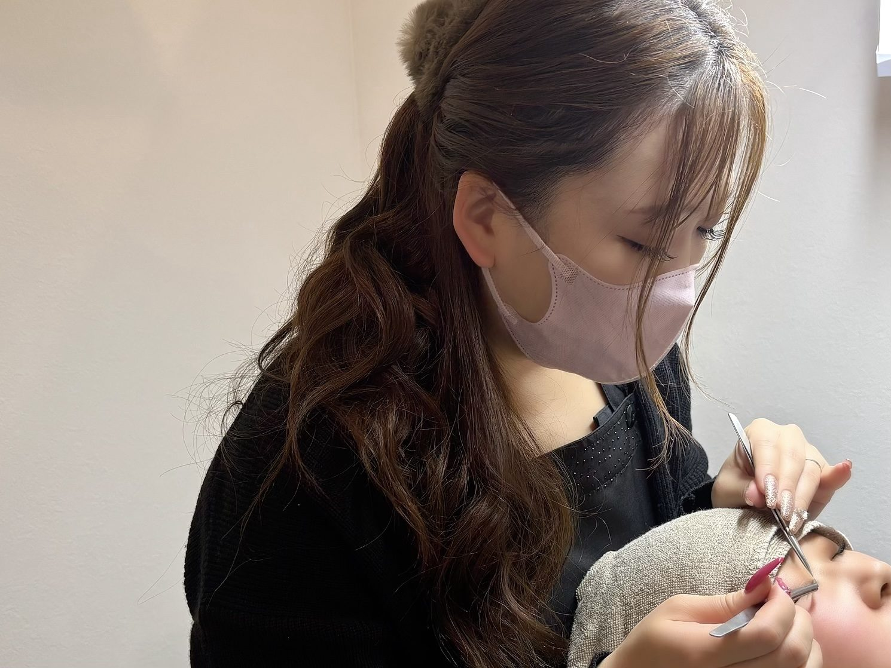
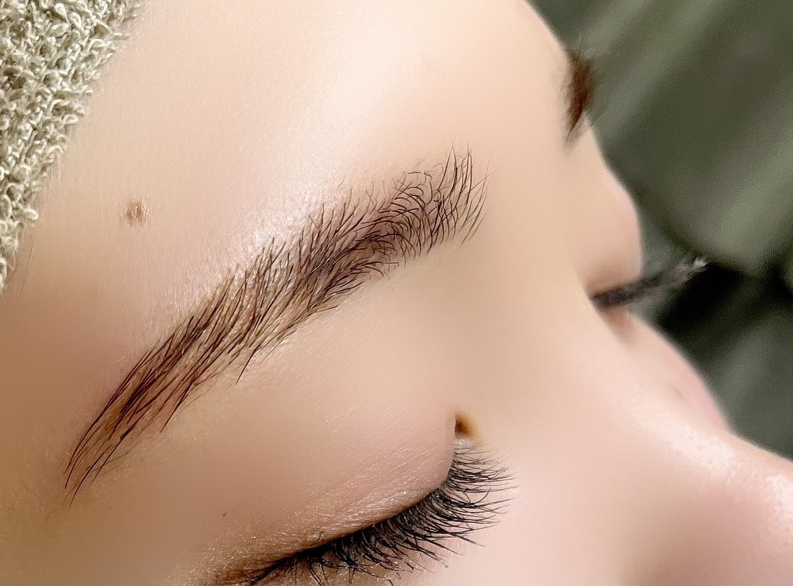
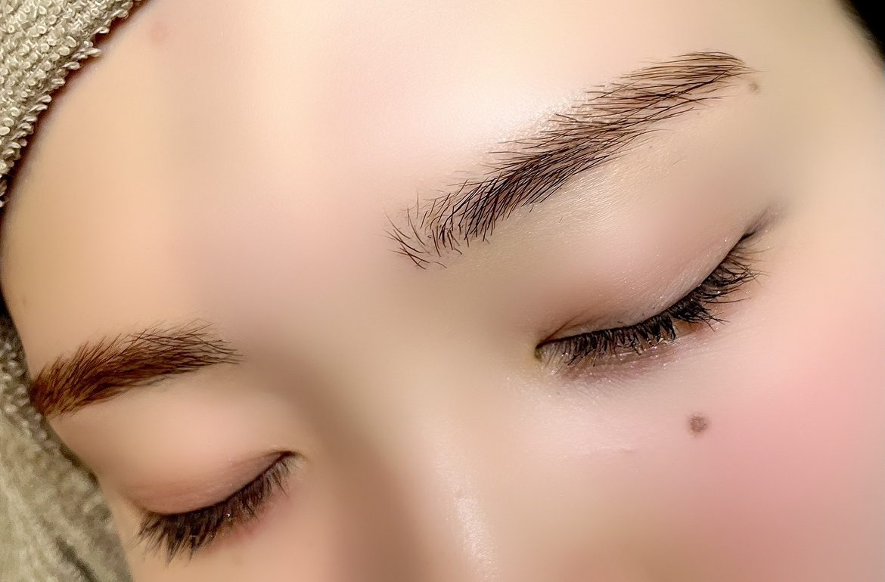
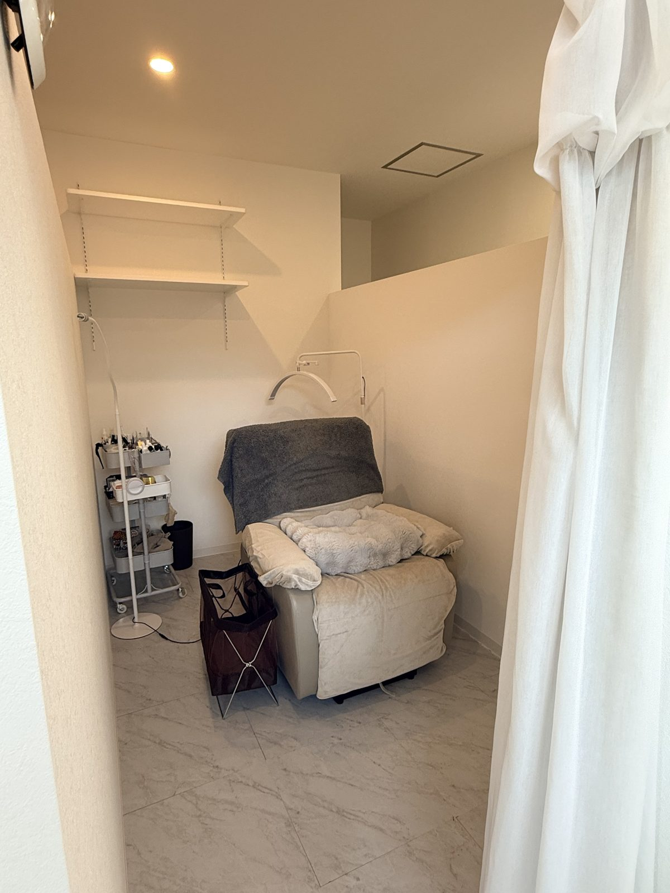

＼ 少しでも気になったら、まずは見学からでも大丈夫です◎ ／
📩 ↓↓ サロン見学・求人お問い合わせはこちら ↓↓





アイリストの方へ
こんなお悩み、抱えていませんか？
・せっかくアイリストになったのに、なかなか入客できない…。
・予約が空きすぎて、やる気が下がってしまう…。
・お客様がなかなかリピートしてくれない。
・単価が低くて、たくさん入客しないと収入が安定しない…。
・休みが取りづらくて、プライベートが全然ない。
・技術や接客をもっと磨きたいけど、フォローしてもらえる環境がない。
そんな不安やモヤモヤを抱えながら働いていませんか？
私たちn plus では、
「もっとアイリストとして輝きたい」
「安定した働き方で、プライベートも大切にしたい」
そんな想いを持つ方を全力でサポートします。
まずは、サロン見学からでも大歓迎です！
ぜひお気軽にお問い合わせください🌿
n plusがアイリストにできること。
“もっとアイリストとして輝きたい”
“技術も収入も、もう一歩レベルアップしたい”
そんなあなたに、n plusはしっかり寄り添います。
✅ 1. 月間新規予約数 30〜50件以上！
集客はサロンが全力でサポート。
「入客できない…」なんて悩みは、ここでは無縁です。
✅ 2. 高単価＆高リピートで安定収入◎
アイブロウやまつげパーマなど、人気メニューを豊富に取り揃え、単価は6,000〜8,000円がメイン。
無理な数をこなさなくても、しっかり収益に繋がります。
✅ 3. 働きやすさ重視の労働環境
完全週休2日制・8時間勤務・残業なし。
もちろん社会保険も完備で、プライベートも大切にしながら働けます。
✅ 4. 技術・接客スキルもブラッシュアップ
n plusでは、独自の接客マニュアルやカウンセリングの流れを丁寧に共有。
「どんな提案をすればお客様に響くか」まで細かく学べます。
✅ 5. 安心のチームワークと雰囲気◎
ギスギスした雰囲気は一切なし。
スタッフ全員が「お互いを応援する」チームです。
困った時もすぐに頼れる環境です。
アイリスト給与
💴 アイリスト
【正社員】
給与詳細
基本給：月給 200,000円〜（※使用期間は190,000円〜）
＋
歩合給（技術売上の40％がお給料になるように歩合支給）
＋
店販手当（売上の10％）
＋
交通費支給（上限10,000円）
【時短勤務正社員】※お子さんがいらっしゃる方
給与詳細
基本給：月給 180,000円〜（※使用期間は170,000円〜）
＋
歩合給（技術売上の40％がお給料になるように歩合支給）
＋
店販手当（売上の10％）
＋
交通費支給（上限10,000円）
✅ モデル月収例
🔸 技術売り上げ60万円のスタッフ
月給：240,000円（歩合＋手当込み）
🔸技術売り上げ100万円のスタッフ
月給：400,000円以上
📅 勤務時間・休日
• 【勤務時間】
正社員
月〜土曜日：9:00〜18:00（休憩1h）
日曜日 ：9:00〜17:00（休憩1h）
※日曜は営業時間短縮
時短勤務社員
月〜土曜日：9:00〜17:00（休憩1h）
※日曜、祝日は定休日
• 【休日】
完全週休2日制＜時短勤務・パート勤務は日、祝日はシフトのお休みとなります＞
年間休日115日以上
有給休暇消化率100％（※実績）
💡 福利厚生
• 社会保険完備（健康・厚生・雇用・労災）
• 退職金積立制度あり（企業型DC）
• 技術・接客マニュアル完備
• 外部講師による勉強会あり（自由参加）
• ヘア・まつ毛メニュー、店販商品社割あり
• 産休・育休制度実績あり
💼 アイリストのお仕事内容
n plusでは、お客様との信頼関係を大切にしながら、丁寧な技術と接客を提供できる方を歓迎しています！
✨【主な業務内容】
• まつ毛施術全般（まつ毛パーマ・エクステなど）
お客様の理想に合わせて、丁寧かつスピーディな技術提供をお願いします。
• 接客・カウンセリング・お会計
ご来店〜お帰りまで、心地よい時間を過ごしていただけるような応対をお願いします。
• 電話対応・予約管理
• 店内清掃・衛生管理
• 備品の発注・在庫確認、買い出し業務
• お客様のカルテ作成・管理
リピート率を高めるためにも、細やかな記録が大切です◎
📱【SNS業務（難しくありません！）】
• ブログ：月に1件（文章が苦手でも大丈夫！フォーマットあり）
• Instagram：月にお客様のデザインを10件投稿
→ 担当したお客様の施術写真を撮って投稿するだけでOK♪
🌿サロン見学、いつでも大歓迎です！
「サロンの雰囲気、実際に見てみたいな」
「スタッフさんってどんな人たちなんだろう？」
「自分に合った職場か、しっかり見てから決めたい」
そんな想いをお持ちの方、ぜひ一度サロン見学にいらしてみませんか？🌱
✨こんな方にオススメです！
• サロンのリアルな空気感を感じたい
• スタッフの人柄や働き方を見てみたい
• 実際のサロンワークを見てみたい
• カリキュラムや働き方について詳しく知りたい
• 代表や現場のスタッフと直接話してみたい！
見学当日は、代表だけでなく実際に働いているスタッフとも直接お話しいただけます！
現場のリアルな声を聞けるからこそ、自分がここで働くイメージがつきやすいと好評です。
お気軽に、あなたの「気になる！」を聞かせてください✨
サロンの空気を感じて、「ここなら安心して働けそう」と思ってもらえたら嬉しいです。
📩ご希望の方は、下記LINEから「サロン見学希望」とご連絡ください。
お会いできるのを楽しみにしております！
↓↓ サロン見学お問い合わせはこちら ↓↓